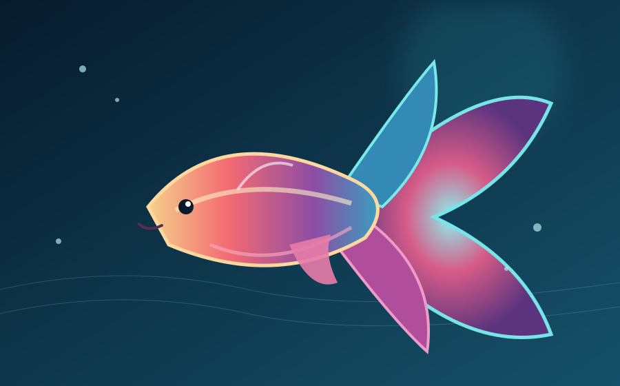

THE BEAUTY OF SIAMESE FIGHTING FISH
เสน่ห์แห่ง
เสน่ห์แห่ง
ปลากัดไทย
สัมผัสความงดงามของปลากัดไทย ผ่านสีสัน ลวดลาย และครีบหางอันพลิ้วไหว เรียนรู้เรื่องราวของปลาสวยงามที่สะท้อนเอกลักษณ์และภูมิปัญญาไทย
Discover THAI FISH DEMO
มากกว่าความสวยงาม คือเอกลักษณ์
ปลากัดเป็นปลาสวยงามที่มีเสน่ห์เฉพาะตัว ทั้งสีสัน รูปทรง และพฤติกรรมที่น่าสนใจ

ครีบและหางโดดเด่น
รูปทรงครีบและหางมีความแตกต่าง เป็นเสน่ห์ที่ทำให้ปลากัดแต่ละชนิดน่าจดจำ
รู้จักสายพันธุ์มรดกภูมิปัญญาไทย
ปลากัดมีความผูกพันกับวิถีชีวิตไทย และได้รับความนิยมในกลุ่มผู้เลี้ยงปลาสวยงาม
เรียนรู้การเลี้ยง
4+หัวข้อเรียนรู้เกี่ยวกับปลากัด
HTML5โครงสร้างเว็บไซต์แบบ Semantic
CSS3ออกแบบให้รองรับทุกหน้าจอ
เริ่มต้นสำรวจโลกของปลากัด
ทำความรู้จักสายพันธุ์ต่าง ๆ และเรียนรู้แนวทางการดูแลปลากัดอย่างเหมาะสม